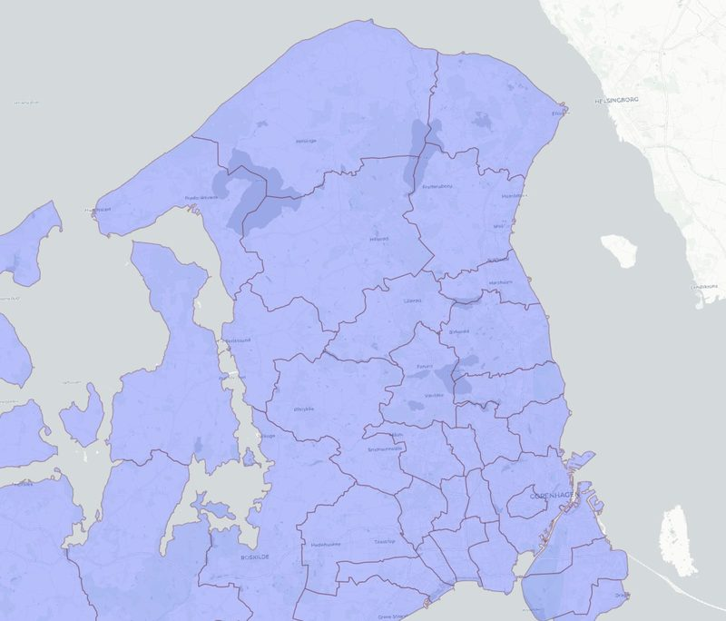
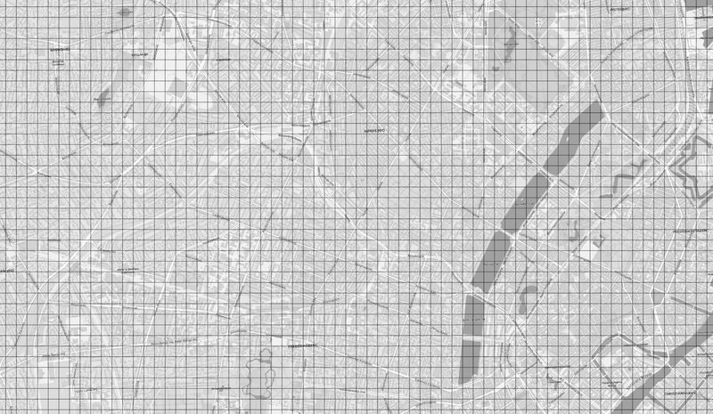
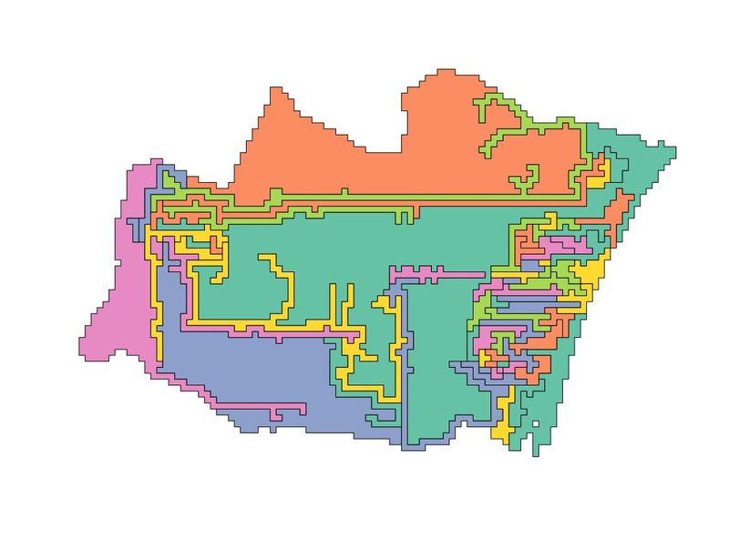
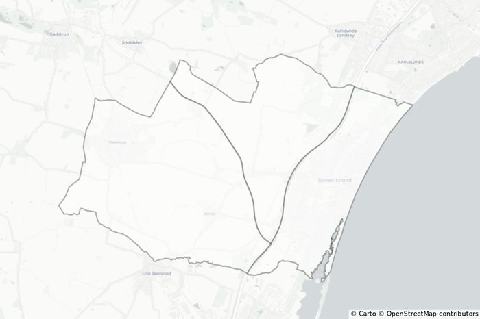
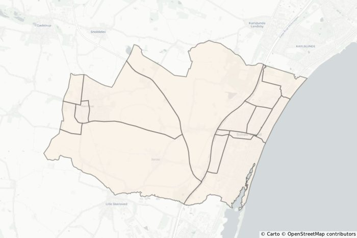
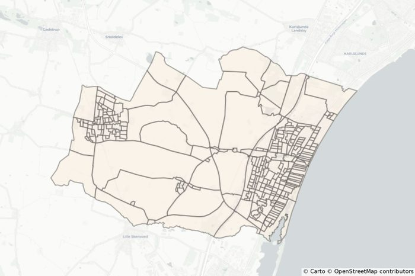
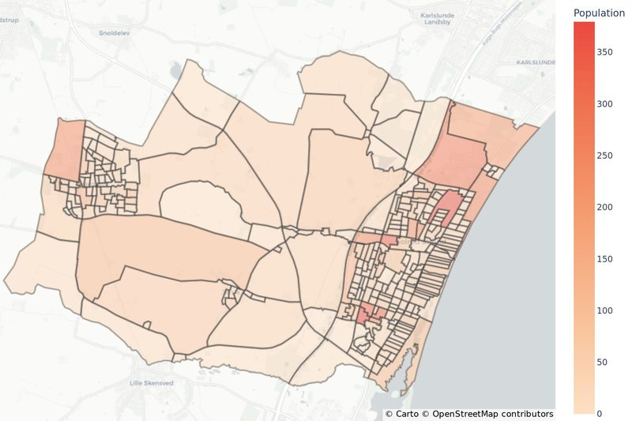

The problem
The goal was data-informed action toward more equitable economic opportunity across Denmark. Municipalities, the usual unit of analysis, are too large and uneven to support tailored local action. Detailed administrative data does exist, with population and household counts on a 100 m grid, but access is limited and single grid cells break privacy rules. Every published unit had to represent at least 100 people and 50 households, in every year across more than 30 years of data.


1 Why simple clustering fails
The obvious approach, clustering grid cells until each cluster meets the thresholds, does not work. Empty grid cells get assigned to clusters at random, and in suburban and rural areas the clusters come out long, thin and oddly shaped. Regions like these are hard to explain and not useful for research or policy.

2 Build base polygons from the built environment
Instead, we started from how places are actually divided. Each municipality is split step by step along the OpenStreetMap road network and waterways, from the largest roads down to residential streets, giving a hierarchy of polygons that people would recognize as blocks and neighborhoods.



3 Map grid counts onto the polygons my focus
Population and household counts live on the grid, so they have to be transferred to the new polygons. I ran the experiments comparing two approaches, weighing accuracy of the counts against how natural the boundaries look. We chose the grid overlay: each grid cell is assigned to the polygon it overlaps most, so counts are never interpolated and every final region is guaranteed to meet the privacy thresholds.

4 Regionalize and evaluate my focus
Finally, neighboring polygons are merged into regions that each meet the privacy thresholds, while staying as small and compact as possible.
Under the hood. Max-p regionalization, which maximizes the number of regions subject to a minimum of 100 individuals and 50 households per region, applied to each region's lowest count over the full 30+ years of data, with spatial weights from rook contiguity. Evaluation checked that the privacy criteria held in every year (so the units support time-series analysis), inspected the maps visually, and measured shape quality with a compactness score (4π × area ÷ perimeter², where 1 is a perfect circle) for every region across all 98 municipalities, so each mapping and clustering variant could be compared on the same footing.
Outcome
The polygonization and regionalization code was released as open source, and the approach was presented at the Spatial Data Science Conference 2022. Next steps included extending the data back to 1990, checking that regions stay consistent over time, and publishing key indicators of economic prosperity at the new geographies. The longer-term vision: a standard small-area unit for Denmark, comparable to US census geographies, and an approach that could aggregate population estimates for regions in countries with limited population data.
Skills
- Max-p regionalization
- OpenStreetMap network processing
- Areal interpolation
- Spatial contiguity weights
- Shape compactness metrics
- Privacy-aware aggregation
- Open-source collaboration